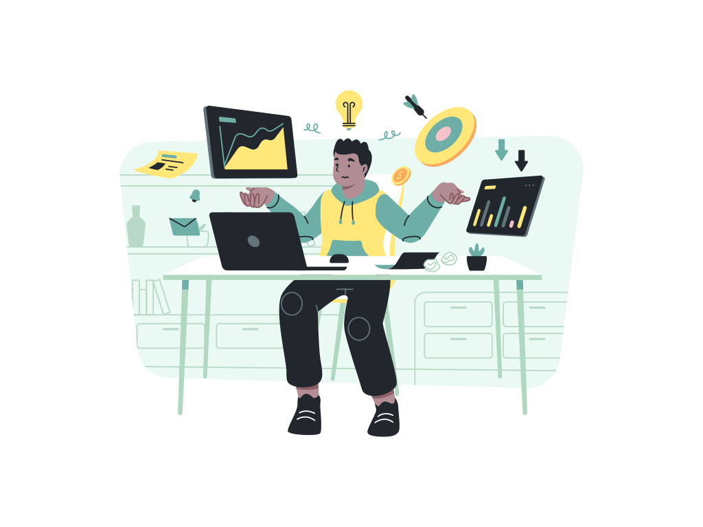

A selection of software systems, prototypes and digital products developed by AutoM8. Projects include client work, internal development, and prototype systems.

A local business directory designed for the Lephalale region, including business-owner dashboards, payment-processing workflows, and search and category filtering.
Custom stock-monitoring software designed to track real-time KG variance and surface discrepancies for energy retailers. Includes automated alerting and a full transaction audit trail.
A custom-built digital school-management platform for Harmony Learning Institute, combining the public school website, online admissions, secure registration, parent portal, learner records, attendance, fees, document management, automated communication, Admin notifications and operational tools into one connected system.
A custom dynamic web platform developed for Stats Companies, combining customer bookings, rentals and ordering with account authentication and an administrative management dashboard.
Fleet management software designed to support vehicle monitoring, fuel tracking, maintenance scheduling, and driver-performance reporting.
An online appointment booking system designed to support patient scheduling, reminder workflows, pre-visit information forms, and schedule management for medical practices.
An e-commerce concept designed to connect local farmers with consumers, including product subscriptions, delivery scheduling, and a supplier-management workflow.
An HR management system designed to support employee onboarding, leave management, performance tracking, and a payroll-integration workflow concept.
An AI-assisted customer support system designed to handle frequently asked questions, route conversations, and demonstrate automated response workflows.
The range of practical problems these systems are designed to solve.
Systems designed around real operational challenges, not generic feature sets.
Clean, intuitive layouts designed for the people who will use the system daily.
Purpose-built data structures that match how an organisation actually works.
Automated alerts, notifications, approvals and data transfers to reduce manual steps.
Web-based systems that work across desktop, tablet and mobile devices.
School management, learner tracking, parent portals and document management.
Real-time visibility into operations, stock, staff, and performance data.
Connecting different tools and data sources into a single, coherent workflow.
Let's discuss your requirements and find the most practical approach for your project.